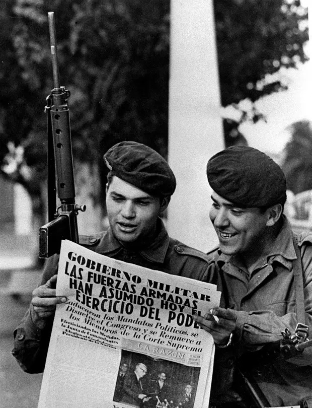

Imagem mostrando tanques e soldados na frente da Casa Rosada.
Imagem de mulheres protestando sobre o desaparecimento de seus filhos, conhecidas como Mães da Praça de maio.
Perón e sua esposa Isabelita.
Militares reunidos, ao centro, Jorge Rafael Videla, um dos ditadores da Argentina.
Soldados patrulhando o redor da Plaza de Mayo no dia 24 de março de 1976.
Forças especiais argentinas em operação em Buenos Aires - 1982
Imagem de María Estela Perón, conhecida como Isabelita.

Soldados lendo um jornal após o golpe.
Imagem da Noche de Los Lápices, marcada por uma série de serquestros e assassinatos feitos na noite de 16 de setembro de 1976.
Protesto das Madres de Plaza de Mayo.